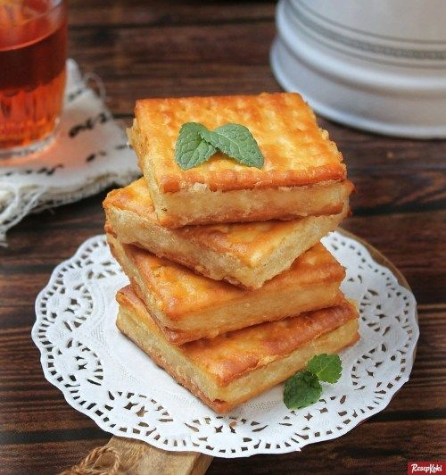

Gabin polos tanpa toping namun diperkaya dengan lelehan cokelat atau lumeran keju krim di bagian tengah. Sensasi isian yang meleleh (melting) ini menawarkan perpaduan tekstur dan rasa yang kaya dan memuaskan.
Tiramisu Oreo
Perpaduan lembut tiramisu klasik dengan sensasi renyah Oreo yang tak terlupakan
Cokelat Keju
Paduan sempurna antara coklat lembut dan gurihnya keju, manisnya pas, nikmatnya luar biasa

Matcha
Rasa matcha yang rich dan creamy, menenangkan hati dan memanjakan lidah